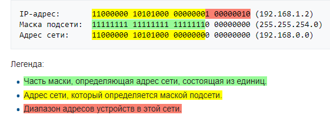

битовая маска для определения по IP-адресу адреса подсети и адреса узла этой подсети. В отличие от IP-адреса маска подсети не является частью IP-пакета.
Благодаря маске можно узнать, какая часть IP-адреса узла сети относится к адресу сети, а какая — к адресу самого узла в этой сети. Например, узел с IP-адресом 12.34.56.78 и маской подсети 255.255.255.0 находится в сети 12.34.56.0 с длиной префикса 24 бита. В случае адресации IPv6 адрес 2001:0DB8:1:0:6C1F:A78A:3CB5:1ADD с длиной префикса 32 бита (/32) находится в сети 2001:0DB8::/32. Другой вариант определения — это определение подсети IP-адресов. Например, с помощью маски подсети можно сказать, что один диапазон IP-адресов будет в одной подсети, а другой диапазон соответственно в другой подсети. Чтобы получить адрес сети, зная IP-адрес и маску подсети, необходимо применить к ним операцию поразрядной конъюнкции (логическое И). Например, в случае более сложной маски
Маски подсети являются основой метода бесклассовой маршрутизации (англ. CIDR). При этом подходе маску подсети записывают вместе с IP-адресом в формате «IP-адрес/количество единичных бит в маске». Число после знака дроби (т. н. длина префикса сети) означает количество единичных разрядов в маске подсети. Рассмотрим пример записи диапазона IP-адресов в виде 10.96.0.0/11. В этом случае маска подсети будет иметь двоичный вид 11111111 11100000 00000000 00000000, или то же самое в десятичном виде: 255.224.0.0. 11 разрядов IP-адреса отводятся под адрес сети, а остальной 32-11=21 разряд полного адреса (11111111 11100000 00000000 00000000) — под локальный адрес в этой сети. Итого, 10.96.0.0/11 означает диапазон адресов от 10.96.0.0 до 10.127.255.255.